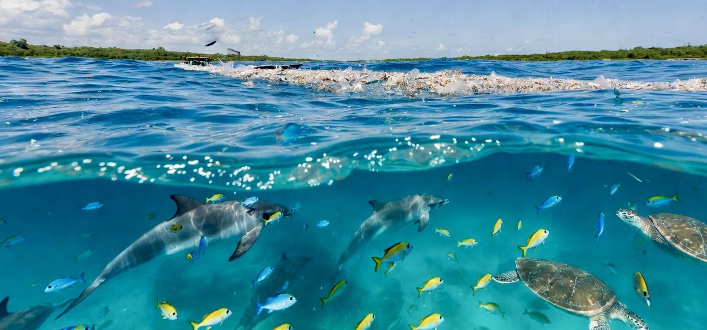
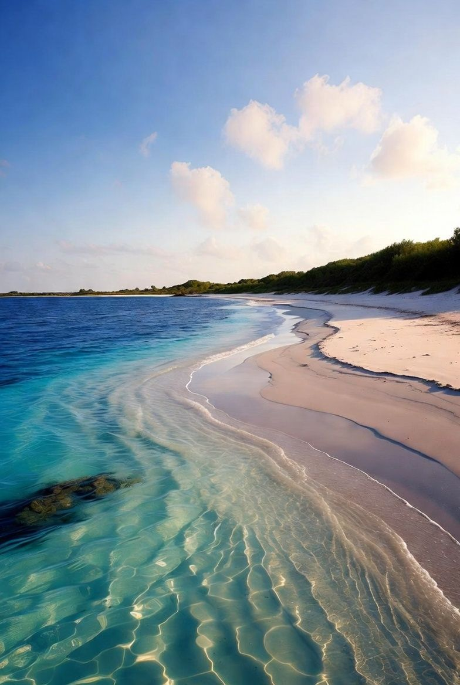

Three solutions under the Ocean card.

The largest cleanup in history — floating systems extracting legacy plastic from ocean garbage patches, plus solar-powered Interceptors catching plastic in rivers before it reaches the sea. Over 60 million kilograms removed as of July 2026.

Full-time cleanup crews pulling plastic from oceans, rivers, and coastlines every day, funded by products made from recovered plastic. Surpassed 50 million pounds removed in February 2026, independently verified.
This page covers 4ocean — see the dedicated page for details.
A social enterprise making ocean-bound plastic worth collecting. Collectors in vulnerable communities exchange plastic for income and social benefits, tracked on a blockchain platform. Over 10 billion bottles exchanged since 2013.